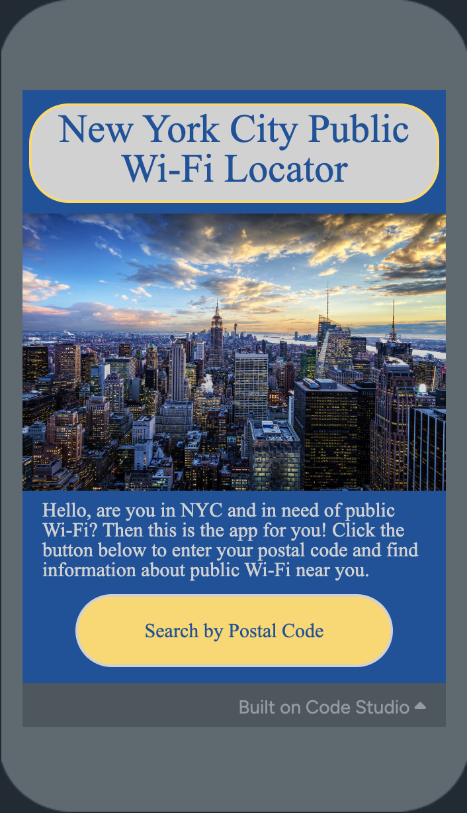

Projects
Lore (2025)
A mobile app to help users share memories, quotes, and photos.
Handling front-end programming with React Native and JavaScript, and back-end services using Node.js and Express.js.
Designing and integrating a dynamic quote board feature and conducting usability testing to enhance user experience.
Managing database with MongoDB for efficient content storage and retrieval. Collaborating with a cross-functional team
on both technical and design aspects. Work in progress.
Check back soon to view repository!
University of Michigan German Club Website (2025)
Building a website in HTML/CSS and JavaScript to promote the German Club’s events, interests, and purposes.
Work in progress.
Check back soon to view repository!
COCO Formatting for Object Detection (2024)
A Python script to preprocess and organize image data into the Common Objects in Context (COCO) dataset format, making
it suitable for object detection and classification tasks in autonomous aircraft competition.
View Repository
22/26 Midwest: Net Zero Emission Strategy for Buildings (2024)
A Raspberry Pi and MQTT prototype of the existing 22/26 climate management system that can be
implemented in a carbon-neutral home tailored to the climate and prevailing construction
techniques of the Midwestern United States. Created poster summarizing research outcomes
and presented findings at Spring Research Symposium.

NYC Public Wi-Fi Locator (2022)
Basic app made with JavaScript, Code.org App Lab UI, and a Kaggle dataset.
User inputs a valid New York City zip code, which returns a formatted list of relevant information pertaining to public
Wi-Fi locations in the specified zip code area.
View Repository
